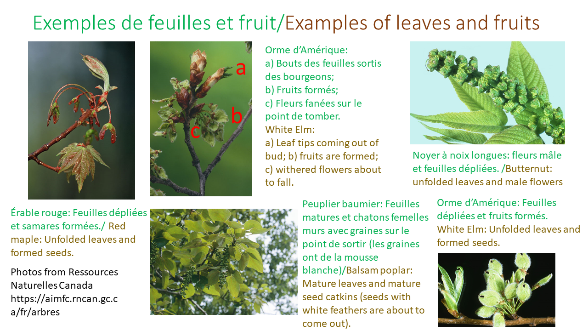
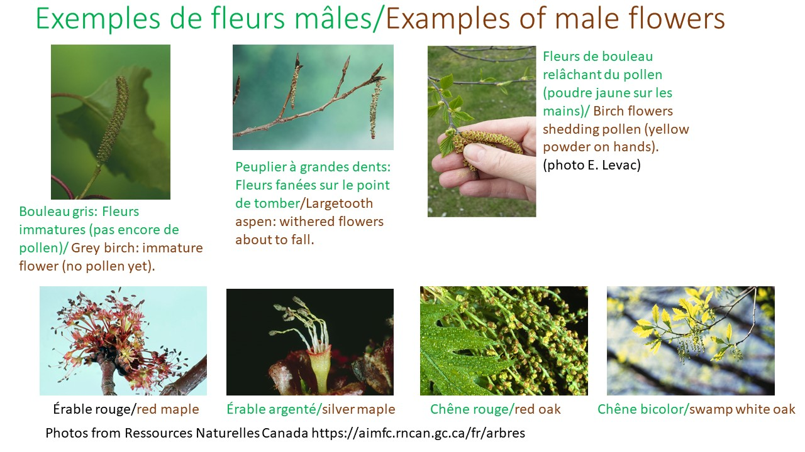

Foire aux questions
Trouvez rapidement les réponses à vos questions sur TreeTraque
Trouvez rapidement les réponses à vos questions sur TreeTraque
Non! Un amour et un intérêt pour la nature suffisent.
Elles ne prennent que quelques minutes, quelques fois par semaine.
Pas du tout. Vous pouvez consulter le guide "Comment observer les arbres" dans le haut de cette page.
Au printemps, la plupart des changements se produisent durant le mois de mai. Les observations peuvent être faites à n'importe quel moment de la journée. À la fin de l'été, dépendamment de la sorte d'arbre, les changements sont visibles entre la fin du mois d'août et la fin d'octobre.
Nous avons fait une liste des espèces d'arbres visées par ce projet. Si vous avez un bel arbre en santé sur votre propriété, ce sera parfait. Si vous n'êtes pas propriétaire, vous pouvez choisir d'observer un bel arbre qui pousse dans votre voisinage.
Pas du tout! Si vous avez besoin d'aide pour identifier un arbre, vous pouvez consulter la page Arbre de Ressources naturelles Canada ou PlantNet.


Notre équipe est là pour vous aider. N'hésitez pas à nous contacter pour toute question supplémentaire.